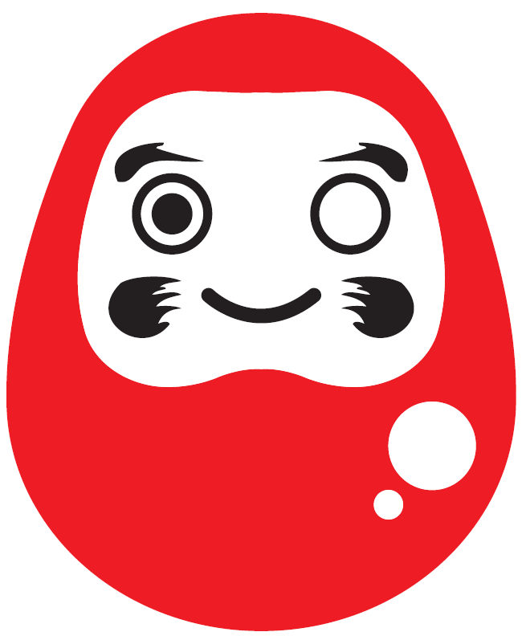
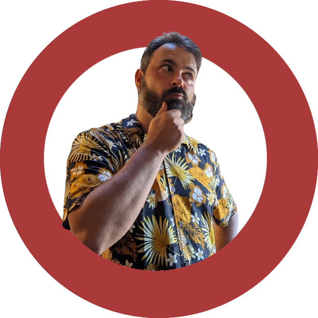

Lavoro con imprenditori e manager su problemi di business concreti. Smonto quello che non funziona, a volte aggiungo struttura, a volte la tolgo.
Dipingi il primo occhio. Ti aiuto a completare il secondo.

Nella tradizione giapponese, il Daruma è una bambola votiva. Si dipinge il primo occhio quando si fissa un obiettivo. Il secondo si completa solo quando l'obiettivo è raggiunto.
Daruma Consulting nasce da questa idea: ogni collaborazione parte da un obiettivo chiaro e si chiude con un risultato misurabile. Nel mezzo, pensiero critico, esperienza e lavoro fianco a fianco.
Chi lavora con me non compra soluzioni preconfezionate. Ottiene le domande giuste, gli strumenti adatti e un occhio esterno che dice quello che serve sentire — non quello che fa piacere.
Come funziona in pratica
Prima di proporre soluzioni
Prima di proporre soluzioni, capisco cosa non funziona davvero. Spesso il problema dichiarato non è il problema reale.
Supporto alle decisioni
Supporto le decisioni con dati, framework e pensiero critico. Non gestisco l'esecuzione — la guido da fuori.
Obiettivi misurabili
Ogni collaborazione ha obiettivi misurabili. Se qualcosa non funziona, lo diciamo subito e cambiamo rotta.
La maggior parte delle idee muore non perché siano sbagliate, ma perché nessuno ha posto le domande giuste prima di investire.
Lavoro con imprenditori e team per validare modelli di business prima che diventino costosi errori. Non produco slide — produco decisioni più solide.
Business Model Canvas, Lean Canvas, Value Proposition Canvas, Design Thinking, Jobs To Be Done. Usati quando servono, non come fine.
Su Sustainable IT ho una competenza verticale: aiuto le organizzazioni a misurare e ridurre l'impatto ambientale dei loro sistemi digitali.
Non è un esercizio di compliance. È una scelta strategica che riduce costi e rischi a lungo termine — e che diventa obbligatoria con normative come la CSRD.
Lavoro con i team tecnici per applicare standard misurabili: Green Software Foundation, Software Carbon Intensity, Technology Carbon Standard. Per le organizzazioni che vogliono andare oltre il greenwashing.
Il 70% delle implementazioni OKR fallisce. Le cause sono quasi sempre le stesse: output scambiati per outcome, task mascherati da Key Results, nessun allineamento strategico.
Ho scritto un libro su questo. L'ho anche applicato decine di volte in contesti reali — startup, PMI, corporate. So quando gli OKR servono e quando è meglio usare qualcosa di più semplice.
Il percorso non è un corso teorico. È costruito sul problema reale che ha l'organizzazione in quel momento.
Chi partecipa ai miei corsi non assiste a lezioni frontali. Lavora su problemi reali con strumenti reali. Ogni percorso è costruito sulle esigenze dell'organizzazione — nella durata, nei contenuti, nel livello di approfondimento.
Professionisti e team acquisiscono competenze pratiche e applicabili da subito — attraverso percorsi basati su pratica, confronto e riflessione, personalizzabili nei contenuti e nella durata.
Tutti i corsi includono: esercitazioni di gruppo, strumenti collaborativi (Miro, canvas di design thinking), materiali e follow-up.
Porto questi temi sul palco e dentro le aziende — senza semplificarli. Keynote, talk e interventi su business design, OKR, sostenibilità e innovazione per conferenze, eventi corporate e percorsi di formazione manageriale.
Tre modi di lavorare insieme. Il livello di coinvolgimento lo decidi tu.
Per decisioni specifiche che non possono aspettare: valutazioni strategiche, feedback su idee, revisione di processi. Una chiamata, un problema, una direzione più chiara.
Per affrontare una fase specifica: validare un modello di business, formare il team, riprogettare un processo. Ogni intervento è costruito sul problema reale, non su un template.
Il modello che preferisco: lavoriamo insieme con cadenza regolare — settimanale o mensile. Io aiuto a decidere, il team esegue. Obiettivi misurabili, strategia operativa, risultati verificabili. Senza il costo di una figura interna a tempo pieno.

Fondatore
Consulente strategico e fractional manager. Ho fondato e venduto quattro aziende. Ragiono da imprenditore, non da slide.
Lavoro con imprenditori e manager su problemi di business concreti — smontando quello che non funziona, a volte aggiungendo struttura, più spesso togliendola. Su Sustainable IT ho una competenza verticale: sono tra i pochi fractional manager in Italia con una specializzazione certificata su questo tema (Green Software Practitioner, Green Software Foundation).
Docente presso Bologna Business School, H-Farm Business School e Talent Garden Innovation School. Presidente di GrUSP dal 2002. Mentor per Founder Institute e altri programmi di accelerazione.
Autore della serie “The Right Way”: sei volumi su OKR, KPI, business design, business innovation, teoria del cambiamento e sustainable IT.
Non esiste il “troppo piccolo” o il “troppo grande”. Esiste il progetto giusto.
Ogni Daruma inizia con un solo occhio: il momento in cui decidi cosa vuoi cambiare.
Il secondo si completa solo quando ci arrivi davvero.
Raccontami il problema. Vediamo se posso essere utile.